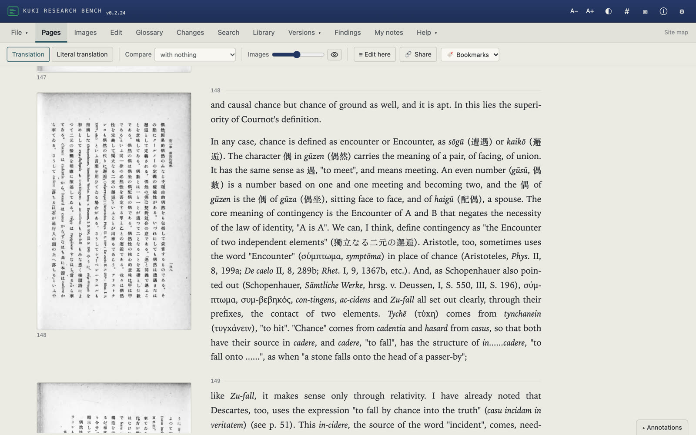
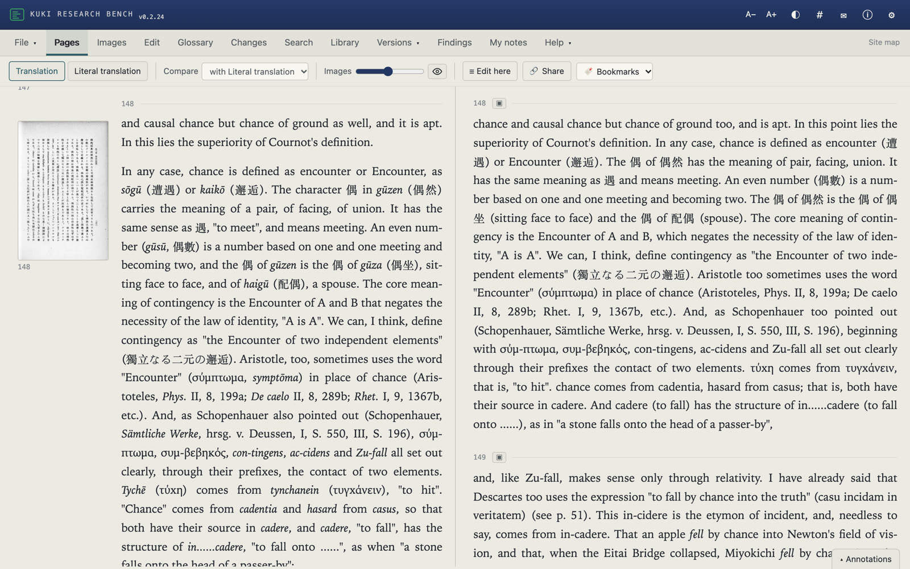
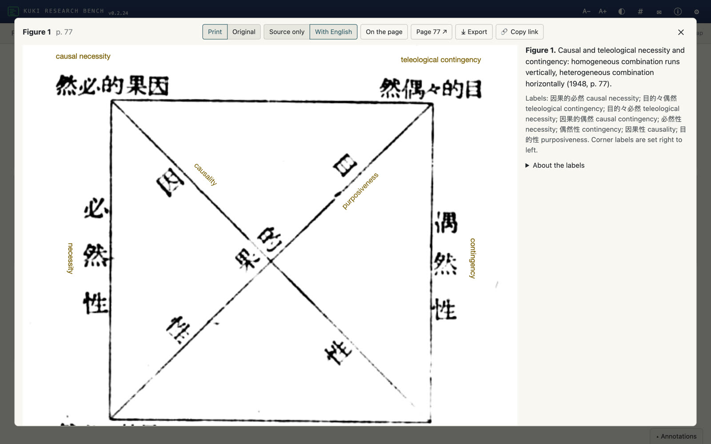
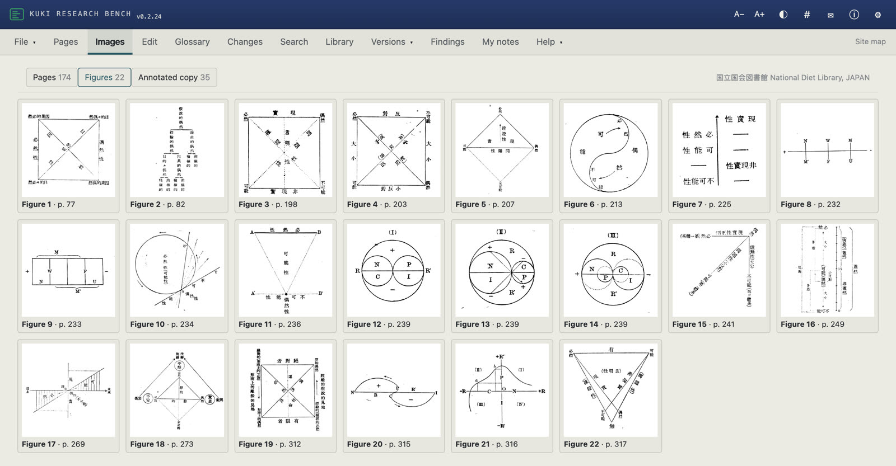
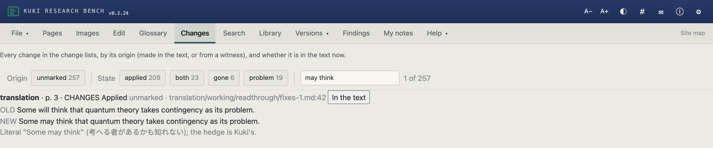
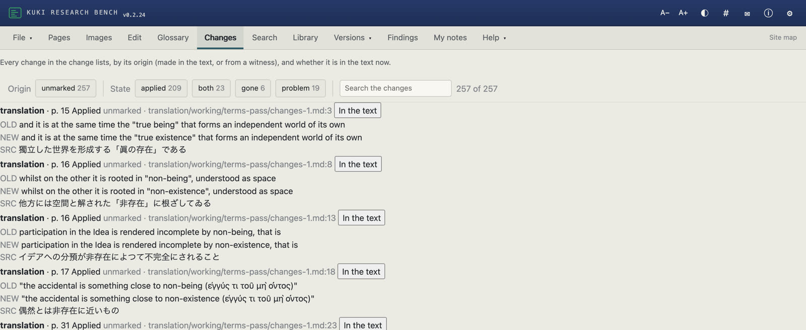
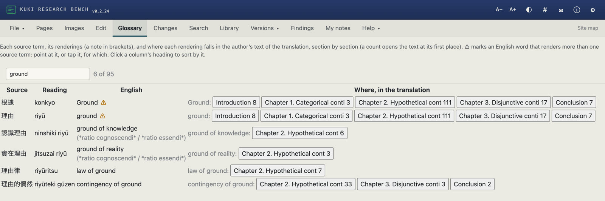

A method for translating books from page images with parallel AI agents under a translator's direction, set out as a procedure with skills, briefs and checking scripts.
Agents work through the page images of a book in parallel, each on a range bounded by the author's headings, under a shared brief that fixes the glossary, the register and the conventions. Each passage is drafted twice: a literal translation, sentence by sentence, published with the translation, and the translation itself, in continuous English prose.
Each version is checked against the other and against the page images. One coordinating agent merges the parts and applies corrections; every other agent returns its corrections as a change list and does not write to the master files.
The translator writes the brief, settles the terms and conventions, reads samples against the source and signs off. These decisions are dated and logged with the translation.
Disassembly and reassembly
Vector translation borrows a working comparison from software reverse engineering, where coding agents now drive decompilers to take a compiled program apart and rebuild source code that behaves like it, tested against the original. A vector translation takes a text apart and reassembles it in another language. The literal version stands where the disassembly listing stands: close to the source, sentence by sentence, and kept. The translation is the reconstructed source. The brief and the glossary do the work of naming, fixing what each part of the text is called before anything is rebuilt. The translation corpus works like a signature library, a record of renderings already attested. The checks take the place of tests. The comparison also marks a limit. A reconstruction judged only by whether it runs drifts towards the usual code of its kind, and a translation judged only by how well it reads in English drifts towards default English. The literal version is therefore published with the translation, and the checks that weigh most are made from outside the agents: by readers of the source language, by earlier translators, and by independent second drafts.
Source surveyEdition, printing and rights; page images at full resolution; the mapping from image to printed page; every page seen at contact-sheet size; existing translations and scholarship that quotes the text.
Translation corpusExisting translations of the work, of the author's other works and of the circle that shares its vocabulary, recorded as term tables, a style note and scholarly finds: attested alternatives for the glossary, and the reference for translation decisions and notes.Translator decides: sources
Pilot and conventionsThe coordinator translates an opening section closely. The register is approved on a sample page, core terms are fixed against the corpus, and footnotes, brackets, citation form and verse are decided once.Translator decides: register, terms, conventions
Brief and batchesA shared brief for each batch; parts of about ten spreads bounded by headings; six to eight agents at a time, each writing the literal version, then the translation, then notes for the editor.
Merge and integrity checksThe coordinator merges the parts in order and runs scripted checks: page markers continuous, every note defined once, banned words absent, competing renderings of each term counted. Backups before every merge.
Checking passesTerminology; translation against literal; comparison with passages quoted in published translations and scholarship; attributions; a concordance with the standard edition. Each pass returns a change list, and each change records its origin: an internal check the agents ran, or a witness (a reader with the source, an earlier translation, the translator's sample review).Translator decides: disputed readings
ApparatusA preface written from a sourced fact sheet; the Translator's Note; notes on translation choices; contents of the printing; concordance; index of persons and works; glossary; figures.Translator decides: contents and scope
BookHandover to Vector Book through a book.toml manifest: a typeset build from the first merged chapter on, design samples, a sweep for missing glyphs, covers. The book side sends faults back as numbered returns, answered item by item; a post-design check reads the typeset book against the translation, word by word; the text and the book are signed off separately.Translator decides: design and sign-off
Translate from the imagesOCR of the pre-war vertical Japanese read 偶然 as 借然. It served only for searching.
Survey every page firstThe printed contents gave wrong section pages throughout and left out the author's own preface, which turned up at the book-design stage.
Fix core terms before the pilot存在 and 有 were both rendered "being", the default of the English corpus, for two chapters until an existing draft separated existence from being. The change needed a pass over the whole book.
Build a translation corpus firstOn the first run, existing translations came to hand one at a time, and each changed the translation after it was drafted. For Rang, 38 sources were read before the pilot and every rendering of the author's terms tabled with its page.
The translation adds nothing absent from the literalThe read-through found 116 faults, mostly added inference words, dropped hedges and moved emphasis. It now runs on each part as it returns.
Never drop the literal versionIt was dropped for one chapter and had to be restarted. Every later correction to the translation was found through it.
Keep witness checks apartNo check the agents ran on their own output found the existence and being drift. Change lists now record whether each change came from an internal check or from a witness, and the Translator's Note says which passages a witness has seen.
Mark every additionTranslator's notes are footnotes beginning "Tr."; insertions into the author's sentences go in brackets 〔 〕.
Check attributions as a pass of their ownAgents supply names and dates in notes. Any that cannot be verified against a named source is deleted.
Decide conventions onceFootnotes or inline glosses, brackets, citation form and verse each changed during the first run, and each change was retrofitted across finished chapters.
Scripts check everyoneA pattern in the coordinator's own merge script folded footnote definitions into paragraphs, and banned words came from the coordinator as well as the agents.
Publish the literal versionTwo Japanese terms were both rendered "being" for two chapters and the translation read smoothly; only a reader with the source found the drift. The literal is now published as a file with the translation, with the source word at the first use of each glossary term.
Build the book from the first chapterTables that could not break across pages, notes lost from captions and missing glyphs all surfaced at the end.
Five scripts in the Python standard library, run by the coordinator.
vt_apply.py
Applies change lists. Each OLD must match its file exactly once; a dry run reports the matches, by origin (internal checks or witnesses), before anything is written.
vt_check.py
Page markers continuous, footnotes paired, dashes and banned words, competing renderings of each term in glossary.csv.
vt_assemble.py
Joins section files, front matter and back matter into the master files, dropping working notes.
vt_corpus.py
Merges the corpus term tables and reports each term's attested renderings, with their sources, against the glossary.
vt_bookcheck.py
Post-design check: the typeset book against the translation's own text, every word, note and heading, with each difference located.
A translation is read and worked through on a research bench built from the translation template of bench-kit, which reads the method's layout: page images, the literal translation, the translation, the glossary and the change lists. The first is the Kuki bench, which is public. It holds a copy of the translation at a named commit; the working repository is the master, and a correction made on the bench is saved as a change list for vt_apply.py, not written into the text.
Pages
Each page image of the 1948 printing beside the translation, with the literal translation one switch away. The library's images are two-page spreads; the bench shows the half that matches each page.
Glossary
Each source term, its renderings and where each falls, section by section. ⚠ marks an English word that renders more than one source term.
Changes
The change lists of the terminology pass and the read-through, each change at its page with the Japanese, and whether it is in the text now.
Search
A Japanese word in the library's OCR and in the translation. Old character forms are read as new, and a search can allow one character wrong, since the OCR misreads.
Images
Kuki's 22 figures, in print and archival form, with English labels set on the figure and a key under the caption.
Library
Works on the book, with ratings and annotations through a private Hypothesis group.

Pages: p. 148, where Kuki defines contingency as the Encounter of two independent elements, beside the page image.

Compare: the translation and the literal translation, held at the same page.

Images: Figure 1 (p. 77) with its English labels. A label runs along a diagonal where Kuki's characters do.

Images: the 22 figures, from the National Diet Library's page images.
Most of the changes the checks made to the Kuki translation were small: a hedge, a grammatical person, a connective, an emphasis mark, a capital. Each is kept in a change list with its page, the Japanese and the reason. Page numbers are those of the 1948 printing.
The read-through
An agent compared the translation with the literal, range by range, with the page images for disputes. It is an internal check.
39adds
58changes
19drops
116fixes in all
A separate pass on the verse made 55 more.
p. 3 · hedgebeforeSome will think that quantum theory takes contingency as its problem. afterSome may think that quantum theory takes contingency as its problem.考へる者があるかも知れない: the hedge is Kuki's.
p. 22 · attributionbeforeto express necessity we must choose the generic judgement (Lotze …) afterone must choose the generic judgement (Lotze …). That is what Lotze says.Kuki writes といふのである, reporting the view. With "we", it read as his own, though he goes on to reject it.
p. 33 · emphasisItalics render Kuki's emphasis dots (圏点). In one sentence italics on law and exception were removed, since the page image shows no dots on 法則 or 例外 there; in the next they were restored on law, where it does.
p. 38 · sensebeforefor the blind a dream is something heard more than seen afteris not something seen but something heard見るものではなくて聞くもの: "more than" softened the claim.
p. 292 · connectivebeforeso that as the necessary-contingent it is at once pushed away afterand which, as the necessary-contingent, is at once pushed awayKuki gives two coordinate predicates; "so that" made the second a result of the first.
p. 316 · inference"consequently" removed from "The first quadrant (I) and the third quadrant (III) are consequently the field".There is no inference marker in the Japanese.

Changes on the bench: the p. 3 entry, with its reason and whether it is in the text now.
Existence and being
存在 and 有 were both rendered "being", the default of English philosophical prose, for two chapters. A specialist's draft of the Introduction, made outside the run, separated them: 存在 existence, 有 being, 無 nothingness. A terminology pass applied the decision book-wide in 67 entries across both versions. At p. 80, Cournot's hasard par néant de causalité, which Kuki writes 因果性の非存在による偶然, went from "the non-being of causality" to "the non-existence of causality". The pass found a clash of its own: 實在理由 (ratio essendi) had been "ground of being", which now pointed to 有, and became "ground of reality".

Changes: terminology-pass entries, each with the Japanese.
One English word for two terms
The bench's glossary flagged three English words that each rendered two of Kuki's terms: "ground" (根據, 理由), "encounter" (邂逅, 遭遇) and "modality" (樣相, 樣相性). Before a decision, agents read every page image and matched each of these English words in both versions to its Japanese; the OCR could not be used, since it reads 根據 in five different wrong forms. On the printed pages 根據 occurs 22 times, 理由 162, 邂逅 47, 遭遇 16, 樣相 44 and 樣相性 48. The reading also found "mode" for 樣相 in five places where "mode" belongs to 樣態.
The translator decided on 9 November 2026 to keep each pair apart with a capital, which, in the Translator's Note, marks the term Kuki uses for his own metaphysical determination: 根據 Ground and 理由 ground; 邂逅 Encounter and 遭遇 encounter; 樣相性 Modality and 樣相 modality. Verbs (邂逅する, 根據づける) stay lower case with the Japanese given; headings in Kuki's text went to sentence case; sentences that would have opened with a lower-case term were rewritten. Where Kuki sets the two words together, the Japanese stays beside the English, as at p. 148: "encounter or Encounter, as sōgū (遭遇) or kaikō (邂逅)".
Three alternatives were weighed. "Foundation" or "basis" for 根據: "basis" already renders 基礎, and Hegel's Grund at p. 324 would no longer read as Hegel. "Reason" for 理由: "reason" renders 理性, Vernunft. Italics: italics already render Kuki's emphasis dots.

Glossary, filtered for "ground". The ⚠ check and the counts compare words without regard to case, so Ground and ground are still flagged and counted together; Bench Kit has been asked to tell them apart.
The OCR
The National Diet Library's OCR of the pre-war vertical text reads 偶然 as 借然 and 必ず as 流す. It is kept for searching only, and even search fails for some terms: finding every 根據 meant reading every page image.
Source words in the literal
The published literal is to give the Japanese at the first use of each glossary term in each section (rule 21), in square brackets, since 〔 〕 already marks the translator's insertions. For Kuki that is about 590 first uses across 53 sections, each to be checked on the page images. It has not yet been applied.
06 · First case
Kuki Shūzō, The Problem of Contingency
偶然性の問題
Preliminary
The Problem of Contingency
Kuki Shūzō (九鬼周造), Iwanami Shoten, 1935
Kuki's study of contingency in its categorical, hypothetical and disjunctive forms, which has not previously been published in English in full. It was translated on 20 and 21 October 2026 from the National Diet Library page images of the 1948 printing, which are in the public domain.
331printed pages
14parts, two batches of seven
96,000words, translation (about)
470translator's notes (about)
116read-through fixes
22figures
250pages, typeset book
4.8Mtokens of background agent work
To be checked against the Kuki Shūzō zenshū and Omodaka Hisayuki's French translation (1966).
with Faith, Love and Industriousness: A Letter to Walther Rathenau. Die Kreatur 2, 1927/28
The second vector translation, and the first from German. Two texts Rang left unpublished at his death in 1924 and Die Kreatur printed in 1927/28: an essay on carnival and its laughter of scorn, from a lecture of 1909, and a letter of 1914 answering Walther Rathenau's critique of mechanisation. No English translation of either has been found. Rang was a close interlocutor of Walter Benjamin in the years of the Trauerspiel book.
2texts
70printed pages
25,000words (about)
1909, 1914written
Translated from the page images of the 1927/28 printing, which are in the public domain. The first run with a translation corpus before the pilot, and with the book handed to Vector Book from the first section on. Source survey done. The translation corpus was built from 38 sources by ten agents, with 1,620 renderings of Rang's terms tabled by page. The pilot section, the core terms and the conventions are with the translator.